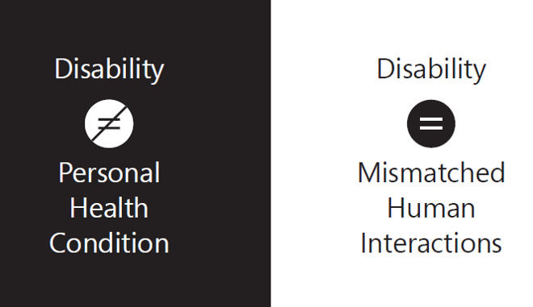

class: center, middle # **Evaluación de la accesibilidad** Mireia Ribera .blue[ribera@ub.edu] --- class: center, middle, inverse ## https://mireiaub.github.io/evalAcc2019/ --- class: summary # Índice + [Los usuarios](#tema1) + Visión, Oído y Motrices + Cognitivos y contextuales + [Lenguaje claro](#tema1-lenguajeclaro) + [Lectura fácil](#tema1-lecturafacil) + [Tema 2: Normativa](#tema2) + WCAG 2.1 --- <video controls width="70%" style="float:left"> <source src="https://mireiaub.github.io/acc2019/media/Coyote.mp4"> </video> <p width="30%" style="color:#ffffff">Coyote choca contra un tunel pintado en la pared</p> <p style="clear:both"></p> #Si nuestros productos no son accesibles... ##los usuarios experimentarán barreras que les impedirán usar, jugar o consultar nuestros servicios e información. --- class: center, middle, inverse name:tema1 # **Los usuarios** Según un estudio de Forrester Research con personas de 18 a 65 años: 57% de las personas se benefician de las mejoras en accesibilidad; y de cada 4 personas 1 tiene algún problema de vista; y de cada 5, 1 tiene algún problema de oído. --- ## Visión La discapacidad de visión puede impedir que el usuario perciba los colores, las figuras de texto o imágenes, o que pueda ver al completo una pantalla o un documento. Se denomina *discapacidad* cuando no puede ser corregido con gafas. --- ## Perfiles - **Personas daltónicas** : no perciben bien algunos de los colores (el daltonismo más común es la confusión de rojo y verde). Perciben la diferencia de colores por su luminosidad (rango blanco-negro) - **Personas con baja visión** : hay de dos tipos, de agudeza visual o de campo de visión. En el caso de la agudeza visual pueden tener dificultades con texto pequeño o imágenes muy densas. En el caso de campo de visión pueden no ver parte del contenido. A veces una excesiva luminosidad, así como parpadeos, flashes o movimiento les pueden molestar. Actualmente se distingue entre visión a distancia y visión de cerca. - **Personas ciegas** : No pueden percibir el contenido textual ni las imágenes. Necesitan un lector de pantalla. Fuente: BS8878 Accesibilidad web - Código de buenas prácticas, 2010. WHO --- ## Prevalencia - En el mundo 1.300 millones de personas de personas tienen una discapacidad de visión. La mayoría son mayores de 50 años. 826 de estos tienen problemas con la visión de cerca. Fuente: World Health Organisation, 2017 - [En España](https://www.ine.es/dynt3/inebase/es/index.htm?type=pcaxis&path=/t15/p419/a2017/p04/&file=pcaxis) - [En Cataluña](https://www.idescat.cat/pub/?id=regdis&n=443) Las causas principales son: retinopatía diabética (42%), cataratas (33%) y glaucoma (2%). Puedes ver una [simulación de las discapacidades de visión](https://www.youtube.com/watch?v=KVQvqmze5SU&feature=youtu.be) en este vídeo de Youtube. También puedes visualizar el contenido de cualquier web simulando una discapacidad visual, con la extensión <a href="https://chrome.google.com/webstore/detail/nocoffee/jjeeggmbnhckmgdhmgdckeigabjfbddl">NoCoffee</a>. --- ## Tecnologías de ayuda <p style="text-align:center"><img src="images/TA-Vision.png" width="600" alt="Imágen de Zoomtext, JAWS, VoiceOver, NVDA, línea Braille e impresora Braille" /></p> - **Magnificadores**: Amplían el contenido - **Lectores de pantalla**: Leen por voz el contenido textual - **Línea Braille** con teclado y anotador Braille: para escribir y leer con símbolos Braille - **Impresoras braille** : para imprimir en Braille --- ## Requisitos de contenido - Texto como tal y no como imagen. [Tutorial W3C](https://www.w3.org/WAI/tutorials/images/textual/) - Presentación a medida. [Ejemplo](https://agora4.org/es/inicio/) - Gráficos con patrones y legibles con lector de pantalla [Ejemplo](https://www.highcharts.com/samples/highcharts/accessibility/accessible-pie/) - Imágenes con contraste [Colour Contrast Analyser](https://developer.paciellogroup.com/resources/contrastanalyser/) - Idioma indicado en el código [Ejemplo](https://www.youtube.com/watch?v=NP94u7y_KkQ&t=0m10s) - Contexto explícito: número de página, sección, nivel de encabezado - Alternativas textuales para contenido visual [Tutorial WebAIM](https://webaim.org/techniques/alttext/) - Audiodescripción de vídeos [Explicación](https://www.youtube.com/watch?v=i_GrYOruY7w) - Formatos específicos de lectura: EPUB3, DAISY [Demo](https://www.youtube.com/watch?v=v9-HvSpzPvI) --- ## Oído La discapacidad de audición puede impedir o dificultar a una persona percibir los sonidos o distinguirlos con claridad. Algunos transtornos de audición se pueden solventar con un audífono o con un implante coclear. <p><img src="images/audifono.jpg" alt="audífono" /><img src="images/coclear.jpg"alt="parte externa e interna del implante coclear" /></p> --- ## Perfiles - Sordera **prelocutiva** vs **postlocutiva**: La sordera prelocutiva es una discapacidad aguda del oído que tienen lugar antes de aprender a hablar (en edad muy temprana). Las personas sordas prelocutivas pueden haber tenido serios problemas en la adquisición del lenguaje que hayan afectado seriamente el desarrollo del lenguaje. - Personas sordas **oralistas** vs **signistas** : Las personas sordas oralistas leen los labios y se comunican mediante el habla y es el grupo más numeroso. Las personas signistas basan su comunicación en el lenguaje de signos; se autoconsideran una comunidad cultural. El lenguaje de signos no es universal y existe, por ejemplo, un lenguaje de signos catalán, español, británico, americano... [Demostración lectura labios](https://www.youtube.com/watch?v=ksjnWmefBbk?t=56s) - Sordera **leve (21-40dB)** vs **severa (+71dB)** [Ejemplo](http://www.starkey.com/hearing-loss-simulator) Las personas jovenes con sordera, tienen un nivel de alfabetización alto en los países avanzados gracias a la detección precoz y a la estimulación logopeda. Ahora bien, a veces se ha optado por liberarles del aprendizaje de segundas lenguas como el inglés, hecho que les dificulta acceder a estudios superiores. --- ## Prevalencia - En el mundo 466 millones de personas de personas tienen una discapacidad de oído (5.2% de la población). La mayoría son personas adultas (91%). La prevalencia es superior en Sud Asia, Asia Pacífica y Africa Sub-Sahariana. Fuente: [World Health Organisation, 2012](https://www.who.int/pbd/deafness/WHO_GE_HL.pdf) y [WHO 2019](https://www.who.int/deafness/en/) - [En España](https://www.ine.es/dynt3/inebase/es/index.htm?type=pcaxis&path=/t15/p419/a2017/p04/&file=pcaxis) - [En Cataluña](https://www.idescat.cat/pub/?id=regdis&n=443) Las causas principales son congénitas o adquiridas. --- ## Tecnologías de ayuda <p style="text-align:center"><img src="images/Audio2.png" width= "55%" alt="funcionamiento del bucle magnético en una sala de conferencias con un amplificador cerca del orador y la sala cubierta por el bucle magnético; trasnmisor FM y collar inductivo" /></p> - **Audífonos**: Cambian la frecuencia del sonido, aumentan su volumen. A menudo incompatibles con el uso de auriculares. - ** Trasnmisores FM**: retransmiten el sonido de un aparato con máxima claridad. - ** Collar inductivo**: permite conectar la TV, teléfono móvil, etc con la prótesis auditiva - ** Bucle magnético **: permite conectar la prótesis auditiva con el sonido de la sala. Muy usado en teatros y espectáculos. - **Ayudas de escritura** suplen posibles deficiencias en la adquisición del lenguaje --- ## Requisitos de contenido - Contenido multimodal: avisos y comunicaciones deben facilitarse también con luz y texto - Subtítulos y lenguaje de signos para vídeo. [ejemplo](https://ableplayer.github.io/ableplayer/demos/video10.html) - Vídeo con pistas de audio principal y de fondo separadas - Lenguaje simple o en casos extremos de lectura fácil.[Tutorial](http://sid.usal.es/libros/discapacidad/26385/8-1/lectura-facil-metodos-de-redaccion-y-evaluacion.aspx) --- ## Motor - Este es un colectivo *muy heterogéneo*. Incluye personas con parálisis cerebral, con malformaciones congénitas, con cuadriplegía.[Un caso cercano](https://www.youtube.com/watch?time_continue=8&v=rRz4Ks4S92Y) - En el ámbito digital *las extremidades superiores son las más relevantes*, aunque en juegos y en realidad virtual todo el cuerpo puede ser un elemento de interacción. - La discapacidad *puede afectar el uso del teclado y del ratón, la posición de la pantalla o incluso el habla*. - La disposición física y colocación del ordenador, aparato o teléfono móbil puede impedir un uso adecuado para estos usuarios. El peso de los aparatos tambien puede representar una dificultad. --- ## Perfiles En este colectivo se diferencian los perfiles a partir del tipo de interacción que requieren - **Punteros alternativos o teclado de pantalla** : usuarios con una discapacidad severa que no pueden usar teclados estándares o ratones. - **Reconocimiento del habla** : usuarios con una discapacidad severa que interaccionan con el ordenador mediante órdenes de voz. - **Sólo teclado** : Usuarios con discapacidades leves que no pueden usar un ratón con precisión. Fuente: BS8878 Accesibilidad web - Código de buenas prácticas, 2010. --- ## Prevalencia - Las estadísticas en este grupo no son muy fiables porque se incluyen en el mismo grupo todos los tipos de discapacidad motora, siendo las afectaciones de las piernas las más comunes. - Este colectivo ha aumentado los últimos años debido a los accidentes de tráfico [noticia del instituto Guttmann](https://www.guttmann.com/es/noticias/institut-guttmann-celebra-vii-encuentro-monitores-programa-game-over-policias-educadores) - [En España](https://www.ine.es/dynt3/inebase/es/index.htm?type=pcaxis&path=/t15/p419/a2017/p04/&file=pcaxis) - [En Cataluña](https://www.idescat.cat/pub/?id=regdis&n=443) --- # Incluso en el mundo de los juguetes <a href="https://www.amsvans.com/blog/4594-wheelchair-barbie-dolls-were-not-so-accessible/"><img src="images/becky.jpg" alt="Becky, la amiga de Barbie"/></a> --- ## Tecnologías de ayuda <p style="text-align:center"><img src="images/Motor.png" width="60%" alt="Púnteros, joystick, pulsador de barbilla, puntero de boca, pantalla con seguimiento de mirada, interfaz mente-ordenador, panel táctil de comunicación aumentada" /></p> - **Punteros y ratones accesibles**: Adaptados a los restos de mobilidad - **Joysticks**: solventan temblores y falta de precisión - **Sistemas de soplado**: funcionan como ratones - **Pantallas táctiles**: facilitan la introducción de datos - **Sistemas de eye-tracking**: permiten interaccionar con movimientos de los ojos - **Brain computer interfaces**: en experimentación. - **Ayudas de autocompletado**: reducen la cantidad de información requerida --- ## Requisitos de contenido A este grupo no le afecta el contenido sino sobre todo la interacción. - Vínculos separados y con un área de activación grande (efecto "big finger") - Posibilidad de uso del teclado - Reducción de pasos y clics para realizar tareas - Formularios simples y con autocompletado, sin desplegables - Límites de tiempo generosos --- ## Cognitivos - En este grupo incluimos a personas que son autónomas en el uso del ordenador y navegando Internet pero que pueden experimentar dificultades asociadas a la *comprensión del lenguaje* y a la *complejidad del contenido*. - También aquí incluimos a personas con *trastornos del espectro autista o Asperger*, que pueden tener dificultades para entender emociones o para interpretar dobles sentidos o el lenguaje corporal. Este grupo ha sido el gran olvidado de las pautas de accesibilidad, aunque recientemente se están tomando acciones para corregir este olvido (ver referencias al final del tema) --- ## Perfiles Aunque hay perfiles muy diversos, como patrones de interacción principal distinguiremos: - *Dislexia, transtornos de aprendizaje y de atención o hiperactividad* : Las personas de este grupo muestran dificultades de concentración y de lectura. Pueden también tener problemas con la escritura. Los textos largos o formularios pueden presentarles barreras importantes.[Ejemplo](http://geon.github.io/programming/2016/03/03/dsxyliea) - *Analfabetismo funcional* : Las personas de este grupo pueden tener dificultades de comprensión de la lengua por niveles bajos de educación, inmigración y aprendizaje de segundas lenguas u otros motivos. Fuente: BS8878 Accesibilidad web - Código de buenas prácticas, 2010. --- ## Prevalencia - Las estadísticas de este grupo no *son fiables* porque no se han recogido sistemáticamente hasta hace muy poco. Algunas veces se habla de "discapacidades ocultas" pues los propios usuarios no quieren reconocer sus características. - En el caso de la dislexia, la *transparencia* del idioma acentúa o no la prevalencia. Por ejemplo en países de habla inglesa se habla de un 15% de personas con dislexia, mientras que en países de habla hispana se habla de un 5% a un 10% de población afectada. --- ## Tecnologías de ayuda <p style="text-align:center"><img src="images/Cognitivos.png" width="70%" alt="Claroread, herramienta de deletreo, ReadSpeaker, Balabolka, Ivona tts, Dolphin EasyReader" /></p> - **Ayudas de lectura**: Que resalten una linea o palabra para facilitar el seguimiento. Que leen en voz alta - **Ayudas de escritura**: para evitar o minimizar errores - **Herramientas de texto a habla**: para tener un refuerzo auditivo en la lectura --- ## Requisitos de contenido - Según el grado: lenguaje simple, lectura fàcil, Comunicación alternativa y aumentativa [AAC](https://aacinstitute.org/introduction-to-aac/) - Mapas conceptuales - Uso intensivo de diferentes tipografías y colores - Evitar complejidad y densidad de información. Evitar textos largos. [Pautas Easy Surfing](http://einfachsurfen.ch/wp-content/uploads/2015/03/Einfachsurfen-Eng-A4_ACC_send.pdf) - Reducir la carga de memoria. Pasos claros y cortos. --- ## Discapacidades contextuales <p style="text-align:center"></p> - La tecnología se usa en escenarios diversos, no óptimos en iluminacion, silencio, libertad de movimientos... ello genera situaciones "discapacitantes" --- ## Los tres principios del diseño inclusivo 1. **Reconozcamos la exclusión** + aplicamos sesgos por nuestra realidad: género, idioma, conocimientos técnicos, capacidad física, realidad socioeconómica 2. **Aprendamos de la diversidad** + La diversidad nos fuerza a encontrar soluciones creativas y a adaptar nuestros diseños a diferentes usos 3. **Resolver los casos extraordinarios beneficia a todo el mundo** <p style="text-align:center"><img src="images/Contextual2.png" width="50%" alt="Discapacidades permanentes, temporales o contextuales tienen efectos y soluciones similares" /></p> --- name:tema1-lenguajeclaro class: center, middle, inverse #### El lenguaje claro facilita el acceso a los contenidos, propone modelos de lengua y reduce la sobrecarga cognitiva. Nace en 1990, en USA, para los textos de la administración del estado. ## Lenguaje claro --- ## ¿En qué consiste el lenguaje claro? Tendencia simplificadora y reduccionista + Crea modelos de documentos + Establece y sigue convenciones + Ofrece criterios de redacción + Cuida la morfología y la sintaxis + Vigila el léxico --- ## <a href="https://publications.europa.eu/en/publication-detail/-/publication/c2dab20c-0414-408d-87b5-dd3c6e5dd9a5/language-es">Buenas prácticas de lenguaje claro en la Unión Europea</a> 1. Piense antes de escribir 2. Piense en el lector 3. Dé forma a su documento 4. BYS: !Breve y sencillo! 5. Redacte con sentido 6. Elimine los sustantivos superfluos 7. Sea concreto y no abstracto 8. Mejor activa que pasiva 9. Atención a los falsos amigos, la jerga y las siglas 10. Revise y compruebe --- ## Consejo <strong>1: Breve y sencillo</strong> .column-left[ <h3 style="text-align:center"><img src="images/triste.png" alt="texto mal redactado"></h3> Los expertos en ganadería se oponen a la importación de estos animales por varios motivos, que van desde la falta de garantías sanitarias de los países vendedores (quienes no han podido aportar ningún documento, de valor internacional, sobre la cuestión), al descenso de la demanda de estas carnes en nuestro país, y también a la falta de una explicación satisfactoria sobre cómo se realizaría el transporte, el almacenamiento y la conservación de la mercancía.] .column-right[ <h3 style="text-align:center"><img src="images/contento.png" alt="texto bien redactado"></h3> Los expertos en ganadería se oponen a la importación de estos animales. Hay varios motivos en contra. Los países vendedores no han aportado garantías sanitarias. No han podido aportar ningún documento de valor internacional. La demanda de estas carnes ha descendido en nuestro país. Tampoco se ha explicado de forma satisfactoria cómo se realizaría el transporte, el almacenamiento y la conservación de la mercancía. ] --- ## Consejo <strong>2: Limitar los intercalados</strong> .column-left[ <h3 style="text-align:center"><img src="images/triste.png" alt="texto mal redactado"></h3> Un médico de un gran hospital londinense ha provocado una fuerte polémica al afirmar que está preparado para utilizar un programa de ordenador diseñado para decidir qué pacientes deben ser atendidos prioritariamente en función de sus posibilidades de supervivencia. ] .column-right[ <h3 style="text-align:center"><img src="images/contento.png" alt="texto bien redactado"></h3> Un médico londinense crea polémica al presentar un programa informático que decide qué pacientes deben ser atendidos prioritariamente según sus posibilidades de supervivencia. ] --- ## Consejo <strong>3: Orden</strong> .column-left[ <h3 style="text-align:center"><img src="images/triste.png" alt="texto mal redactado"></h3> Corrió la chica, después, hacia la carretera y, con mucha fuerza, gritó ] .column-right[ <h3 style="text-align:center"><img src="images/contento.png" alt="texto bien redactado"></h3> Después la chica corrió hacia la carretera y gritó con mucha fuerza ] --- ## Consejo <strong>4: Poner la información relevante al principio</strong> .column-left[ <h3 style="text-align:center"><img src="images/triste.png" alt="texto mal redactado"></h3> A primeras horas de la mañana de ayer, jueves, apareció ahorcado en un corral junto a su domicilio, en Pedroso, <em>un hombre de 62 años, casado y con cuatro hijos</em>. ] .column-right[ <h3 style="text-align:center"><img src="images/contento.png" alt="texto bien redactado"></h3> <em>Un hombre de 62 años, casado y con cuatro hijos</em>, apareció ahorcado en un corral junto a su domicilio, en Pedroso, a primeras horas de la mañana de ayer, jueves. ] --- ## Consejo <strong>5: Proporción alta de verbos</strong> .column-left[ <h3 style="text-align:center"><img src="images/triste.png" alt="texto mal redactado"></h3> En el caso de una excesiva preocupación de los estudiantes por la gramática puede ser útil el conocimiento de las técnicas de generación de ideas y la reflexión sobre los defectos cometidos durante la escritura. <p class="highlight">35 palabras, 1 verbo, 11 sustantivos</p> ] .column-right[ <h3 style="text-align:center"><img src="images/contento.png" alt="texto bien redactado"></h3> Si los estudiantes se preocupan excesivamente por la gramática puede ser útil que conozcan las técnicas para generar ideas y que reflexionen sobre los defectos que cometen mientras escriben. <p class="highlight">28 palabras, 7 verbos, 5 sustantivos</p> ] --- ## Consejo <strong>6: Evitar las negaciones</strong> .column-left[ <h3 style="text-align:center"><img src="images/triste.png" alt="texto mal redactado"></h3> Ignoraba que los cajeros automáticos no pudieran servir billetes de 100 euros. ] .column-right[ <h3 style="text-align:center"><img src="images/contento.png" alt="texto bien redactado"></h3> Creía que los cajeros automáticos podían servir billetes de 100 euros. ] --- ## Consejo <strong>7: Mejor en voz activa</strong> .column-left[ <h3 style="text-align:center"><img src="images/triste.png" alt="texto mal redactado"></h3> El taxista Héctor Jorge González <em>fue muerto</em> de un balazo en San Justo. Se trata del segundo asesinato… ] .column-right[ <h3 style="text-align:center"><img src="images/contento.png" alt="texto bien redactado"></h3> El taxista Héctor Jorge González <em>murió</em> de un balazo en San Justo. Se trata del segundo asesinato… ] --- ## Consejo <strong>8: Evitar los gerundios</strong> .column-left[ <h3 style="text-align:center"><img src="images/triste.png" alt="texto mal redactado"></h3> Me ha pedido permiso para citar en la conferencia los resultados de mis investigaciones, <em>asegurándome</em> que sólo los comentaría oralmente y que no pasaría ninguna fotocopia, y <em>comprometiéndose</em> a mencionar mi autoría exclusiva. ] .column-right[ <h3 style="text-align:center"><img src="images/contento.png" alt="texto bien redactado"></h3> Me ha pedido permiso para citar en la conferencia los resultados de mis investigaciones. <em>Me ha asegurado</em> que sólo los comentaría oralmente y que no pasaría ninguna fotocopia, y <em>se ha comprometido</em> a mencionar mi autoría exclusiva. ] --- ## Consejo <strong>9: Dejar actuar los actores</strong> .column-left[ <h3 style="text-align:center"><img src="images/triste.png" alt="texto mal redactado"></h3> Antes de preparar la primera taza, <em>se llena</em> el depósito de agua, <em>se añade </em> el café molido a la cápsula y <em>se deja calentar</em> la máquina hasta que se apague la luz piloto. <em>Se han difundido</em> varios chismorreos sobre los príncipes <em>a través de la prensa italiana</em> en los últimos meses ] .column-right[ <h3 style="text-align:center"><img src="images/contento.png" alt="texto bien redactado"></h3> Antes de preparar la primera taza, <em>llene </em> el depósito de agua, <em>añada</em> el café molido a la cápsula, y <em>deje calentar</em> la máquina hasta que se apague la luz piloto. <em>La prensa italiana ha difundido</em> varios chismorreos sobre los príncipes en los últimos meses. ] --- ## Actividad + En grupos de 2 + Aplica los consejos de lenguaje claro a un texto <a href="https://www.abc.es/cultura/abci-cultura-cierra-todos-museos-madrid-coronavirus-202003111908_noticia.html">Noticia ABC Cierran los museos</a> + Coméntalo con otros compañeros --- ## Para saber más + Daniel Cassany La cocina de la escritura Barcelona: Anagrama, 1996 + Unión Europea <a href="ttps://publications.europa.eu/en/publication-detail/-/publication/c2dab20c-0414-408d-87b5-dd3c6e5dd9a5/language-es">Como Escribir con claridad</a> + <a href="https://plainlanguagenetwork.org/">Plain language network </a> --- name:tema1-lecturafacil class: center, middle, inverse #### La lectura fácil reduce la abstracción; amplia algunos contenidos, si es necesario; cuida el aspecto formal de los textos; complementa el texto con dibujos y pictogramas. Nace en 1990, en Suecia. ## Lectura fácil --- ## 1. Criterios de comprensibilidad Los criterios de comprensibilidad se refieren a la capacidad del vocabulario y de la estructura sintáctica de las frases para simplificar el texto y hacerlo comprensible. --- ### 1.1 Vocabulario + Usar un lenguaje sencillo y directo. + Usar palabras propias del lenguaje hablado cotidiano. + Evitar palabras difíciles, pero usar un lenguaje adulto y digno. + Usar palabras con significado preciso y evitar palabras genéricas, vacías de significado. --- ### 1.1 Vocabulario (continuación) + Usar las mismas palabras de forma sistemática. No cambiar de sinónimo para referirse al mismo concepto. Entre dos sinónimos, escoger el más frecuente. + Usar verbos para describir acciones. Evitar los verbos nominalizados. + Evitar los conceptos abstractos, el lenguaje figurado, las metáforas y las palabras polisémicas. Si son imprescindibles y de uso poco común, poner ejemplos concretos o hacer comparaciones que faciliten su comprensión. + Evitar, si es posible, los adverbios acabados en “-mente”. --- ### 1.2 Gramática + Escribir frases cortas (10 palabras de media) con una única idea principal en cada oración + Las palabras de una sola frase se colocan en una línea + Las frases más largas se fragmentan, pero se respetan las unidades sintagmáticas. + Evitar las frases subordinadas --- ### 1.2 Gramática (continuación) + Mantener el orden convencional de la frase (sujeto + verbo + predicado). + El sujeto real concuerda con el sujeto gramatical. + Usar siempre que sea posible la voz activa en lugar de la pasiva + Usar las formas afirmativas en vez de negativas. Reservar la construcción negativa para frases con valor realmente negativo. Evitar las dobles negaciones. --- ## 2. Criterios de legibilidad Los criterios de legibilidad se refieren a la capacidad de la estructura del texto y del formato para facilitar su lectura. --- ### 2.1 Estructura narrativa + A menudo es difícil escribir en lectura fácil. Escribir para la comprensión fácil no significa escribir textos telegráficos. Tener una buena historia para explicar y conseguir un texto fluido es esencial para mantener el interés del lector + Construir una historia concreta y lógica con una sola línea argumental. + Escribir frases cortas con una sola idea principal en cada oración + Desarrollar la acción de forma directa y simple, siguiendo una secuencia lógica. --- ### 2.1 Estructura narrativa (continuación) + Describir los hechos en orden cronológico, es decir, sin saltos en el tiempo. + Evitar elipsis y sobreentendidos: no se puede presuponer conocimiento del contexto (lugar, países, fechas…) o de los referentes culturales necesarios para comprender una historia. Presentar los antecedentes, exponer el contexto. + Evitar las introducciones excesivamente largas + Evitar la implicación de muchos personajes en cada acción. --- ### 2.2 Formato + Evitar las líneas excesivamente largas. La longitud de línea debe tener entre 55-60 caracteres contando los espacios. + Dividir el texto en párrafos y en capítulos relativamente cortos, para permitir pausas frecuentes. + No justificar el texto, alinearlo a la izquierda. --- ### 2.2 Formato (continuación) + Evitar dejar partículas al final de línea como artículos, pronombres, preposiciones y conjunciones + Intentar colocar los diferentes complementos de la oración en líneas separadas + La separación en líneas debe facilitar el ritmo natural de la lectura. --- ### Ejemplo .column-left[ <h3 style="text-align:center"><img src="images/triste.png" alt="texto mal redactado"></h3> Nadie será sometido a torturas ni a penas o tratos crueles, inhumanos o degradantes. Todos son iguales ante la ley y tienen, sin distinción, derecho a igual protección de la ley. Todos tienen derecho a igual protección contra toda discriminación que infrinja esta Declaración y contra toda provocación a tal discriminación.] .column-right[ <h3 style="text-align:center"><img src="images/contento.png" alt="texto bien redactado"></h3> Nadie puede maltratar o torturar a otra persona. Las leyes deben proteger y ayudar de la misma forma a todas las personas.] --- ## Actividad + En grupos de 2 + Aplica los consejos de lectura fácil a un texto <a href=="https://www.abc.es/cultura/abci-cultura-cierra-todos-museos-madrid-coronavirus-202003111908_noticia.html"Noticia ABC Cierran los museos</a> + Coméntalo con otros compañeros --- ## Para saber más + <a href="https://easy-to-read.eu/">European standards for making information easy to read and to understand</a> + <a href="http://www.lecturafacil.net/">Associació Lectura fácil</a> + <a href="https://sites.google.com/view/lecturafaciljoves">Ejemplos de lectura fácil en ESO (con ejercicios)</a> --- name:tema2 class: center, middle, inverse ## Accesibilidad Web. Pautas WCAG 2.1 --- ## Componentes esenciales de la accesibilidad web <p style="text-align:center"><img src="images/componentesEsenciales.png" width="70%" alt="La accesibilidad web afecta a las herramientas de autoría y de evaluación (ATAG), al contenido (WCAG) y a los agentes de usuario (UAAG), tales como navegadores, reproductores y aydas técnicas" /></p> --- ## Pautas de Accesibilidad para el Contenido Web 2.1 + Algunos conceptos relevantes + Proceso + Esencial / Simple decoración + Alternativa: cumple el mismo propósito + Compatible con la accesibilidad --- ## ¿Cómo funcionan? + Énfasis en la validación. Niveles de conformidad + Texto y teclado, <span class="highlight">otros mecanismos de entrada (WCAG 2.1)</span> + Principios – Pautas – Criterios de conformidad + Documentos de apoyo: + Comprender las WCAG 2.1 + Cómo cumplir con las WCAG 2.1 + Técnicas para las WCAG 2.1 --- ## Los cuatro principios 1. Perceptible 2. Operable 3. Comprensible 4. Robusto En inglés, <span lang="en">*POUR* (Perceptible, Operable, Understandable and Robust)</span> --- ## Herramientas para contraste de color en texto (1.4.1) y en elementos no textuales (1.4.11) </span> <p style="text-align:center"></p> <p><a href="https://developer.paciellogroup.com/resources/contrastanalyser/">Colour Contrast Analyser</a>, <a href="https://contrast-ratio.com/">Contrast Ratio</a>, <a href="http://www.brandwood.com/a11y/">Branwood</a>, <a href="http://colorsafe.co/">Color safe</a> </p> --- ## Herramientas para la detección de flashes que podrían crear convulsiones <p><a href="https://trace.umd.edu/peat">Herramienta PEAT</a></p> --- ## Documentos de referencia .column-left[ <p><a href="http://wcag2madeeasy.com/libro-accesibilidad-web.html"><img src="images/WCAG21DeFormaSencilla.png" width="90%" alt="Portada libro Accesibilidad web. WCAG 2.1 de forma sencilla" /></a></p>] .column-right[ <p><a href="https://w3c.github.io/coga/user-research/">Cognitive Accessibility User Research</a>Draft 20 January 2020</p> <p><a href="https://w3c.github.io/low-vision-a11y-tf/requirements.html">Accessibility Requirements for People with Low Vision</a>Editor's draft 31 July 2019</p> <p><a href="https://w3c.github.io/Mobile-A11y-TF-Note/">Mobile Accessibility: How WCAG 2.0 and Other W3C/WAI Guidelines Apply to Mobile</a>Editor's draft 11 December 2018</p> ] --- <center><img src="images/allfolks.gif" width="100%" alt="That's all folks"></center>